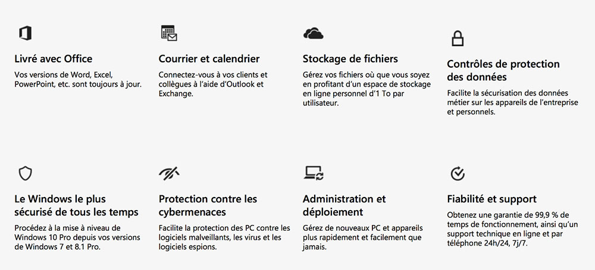

6h | FORMATION

6h | FORMATION

Formation : 17 avril de 12h à 18h.
En ce mois d’avril 2018, il m’a été possible d’assister à un cours donné auprès des professionnels de l’informatique de Belgique.
Lorsque j’ai été informé du sujet, je n’en avais aucune connaissance, d’où mon intérêt à être présent lors de ce cours donné exclusivement en anglais et dans les locaux de Microsoft situé à Zaventem en ce mardi 17 avril 2018.
Lors de ce cours, on a abordé la complexité du GDPR, qui touche toutes les entreprises ayant des données sur des citoyens européens. Il leur est demandé d’écrire une charte de confidentialité et expliquant ce qu’ils font concrètement de ces données.
Cette charte doit être disponible sur le site internet de l’entreprise et, si possible, également envoyée à tous les clients concernés.
Afin d’être « GDPR Compliant », il faut que toutes les données récoltées soient protégées et avoir la possibilité d’effacer les données du client si demandé par ce dernier.
Prenons l’exemple d’un bus.
Nos clients utilisent ce bus et le but est de ne pas rester à une position, mais de se déplacer, rendre nos clients heureux et offrir nos services.
À partir du 25 mai, les clients et les employés ont plus de droits et peuvent exiger d’être informé ou d’ajouter, modifier, effacer ou émettre des restrictions sur des informations à leur sujet.
S’ils nous demandent ce que nous avons sur eux, nous avons l’obligation de le leur communiquer et d’expliquer comment les données sont protégées de toute intention malveillante.
En cas de brèche de sécurité, nous avons 72 heures pour prévenir les personnes concernées que ce soit venant de notre compagnie ou de celle des autres.
L’idée du GDPR est d’atténuer, si pas éradiquer le risque de vol de données et les soucis de sécurité.
Il y a 6 piliers sur lesquels cette réglementation se base :
Microsoft nous a présenté les intérêts d’utiliser leurs produits plutôt que ceux de leurs concurrents.
En effet, au jour de ce cours, Dropbox et Gmail ne répondent à aucun critère de la réglementation européenne, d’où l’intérêt de préférer OneDrive/SharePoint ainsi qu’Outlook/Exchange.
De plus, via la souscription de « Microsoft 365 », il nous est possible d’accéder à une plateforme nous présentant le score de sécurité et les possibilités pour améliorer ce score ; cela permet de répondre plus facilement aux critères pour être « GDPR Compliant » et d’avoir une voie à suivre si l’on ne sait pas comment s’y prendre.
Cette plateforme est Secure Score : https://securescore.office.com
Si on obtient un score de 24 sur 364, cela signifie qu’on est par défaut sécurisé, mais qu’il y a moyen d’optimiser le système de device management, de créer un meilleur système d’authentification (système à 2 facteurs, biométrique, etc.) et encore bien d’autres choses.
Les avantages de Microsoft 365 sont les suivants :
Il offre des services et des produits tout en aidant à gérer et activer des services, le tout à un prix mensuel faible.
En comparaison, Microsoft Office 365 Business Premium est à 10,50 €/mois tandis que Microsoft 365 Business est à 16,90 €/mois.
De là, Microsoft nous a ensuite présenté d’autres produits pouvant intéresser les entreprises :
Ce cours était complet, varié et fort enrichissant.
Grâce à Hans Demeyer, l’approche juridique du GDPR a été bien plus facile à comprendre et ce fut l’occasion de voir comment l’informatique à un impact important, quel que soit le secteur, lorsqu’il s’agit de la protection de données.
Aujourd’hui plus que jamais, les données utilisateurs recueillies par les entreprises sont au centre de toutes les attentions suite à toute l’actualité liée à Facebook.
Une vidéo très intéressante explique ce en quoi consiste le GDPR :